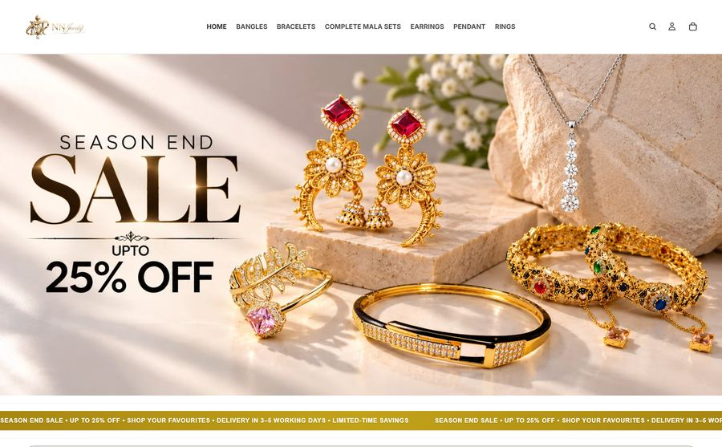

Custom Websites
Modern, responsive business websites, landing pages and portfolios.
I create modern, high-converting websites, Shopify stores and custom web solutions that help you get more customers, more sales and a stronger online presence.
From custom business websites to complete Shopify stores, I help turn your ideas into a strong online presence.
Modern, responsive business websites, landing pages and portfolios.
Shopify design, theme customization, product pages and store setup.
Clear user journeys and polished interfaces built around customers.
AI-assisted modern web experiences with careful implementation.

Premium Shopify store design.

Software product website.

Product download experience.
A flexible toolkit for creating reliable websites, ecommerce experiences and modern web applications.
Thoughtful planning, clear communication and practical development choices from the first discussion to launch.
Layouts and user journeys shaped around your business goals and audience.
Experiences designed to work across mobile, tablet and desktop screens.
Defined scope, progress updates and feedback at key project stages.
Attention to performance, accessibility basics, metadata and maintainability.
A simple process keeps the project focused, collaborative and easier to manage.
Share your idea, goals, audience and required features.
Agree on structure, visual direction and project scope.
Build the website and refine it with your feedback.
Check key pages, responsive layouts and links before launch.
Sample testimonial cards are shown as layout placeholders. Replace them with verified client feedback before publishing.
“The process was organized and the final website was easy to navigate. Communication stayed clear throughout.”
“The store layout feels professional and works smoothly across different screen sizes.”
Demo content only — these are not verified customer reviews.
Some quick answers to common project questions. Final terms can be confirmed in your project proposal.
Business websites, portfolios, landing pages, Shopify stores and custom web applications, depending on the project requirements.
Timing depends on the number of pages, features, content readiness and feedback cycle. A clear timeline is agreed before development starts.
Yes. Responsive behavior across mobile, tablet and desktop is included in the development and testing process.
Yes. Existing website improvements, theme customization, bug fixes and maintenance can be discussed after reviewing the current setup.
Send your requirements through the contact page or WhatsApp. We can discuss goals, scope, estimated timeline and next steps.
Let's discuss your idea and build a website that supports your business goals.